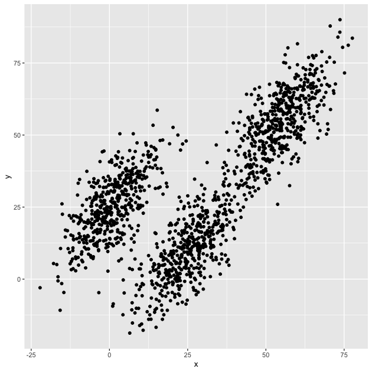
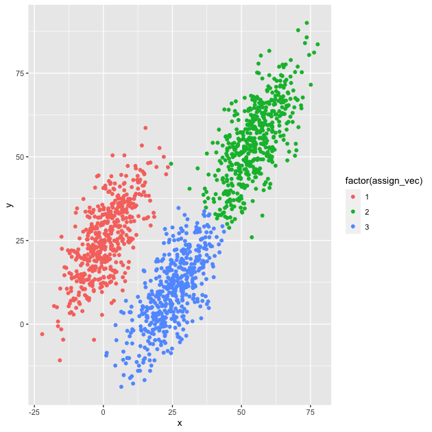

A course in quantitative research workflow for students in the higher education administration program at the University of Florida
In this lesson, we’ll continue to practice functional programming in
R. To give us something to work on, we’ll code up our own version of a
k-means clustering
algorithm. R already has a function to do this, appropriately titled
kmeans(), but we’ll pretend it doesn’t.
Being able to code up an algorithm based on mathematical notation or pseudocode is a really valuable skill to possess. As algorithms become even moderately complex, however, leaning on quick and dirty spaghetti code to “just get the job done” quickly becomes a mess. When you’ve worked hard to get an algorithm to work, it’s important to work a little harder to write it in a functional way that
With these goals in mind, we’ll write our own k-means clustering function. Because this lesson isn’t about learning the ins and outs of machine learning, we won’t dive into the various robustness checks we might otherwise perform were this a real project. That said, we should be able to write a well-performing function.
## ---------------------------
## libraries
## ---------------------------
library(tidyverse)
## ── Attaching packages ─────────────────────────────────────── tidyverse 1.3.1 ──
## ✔ ggplot2 3.3.5 ✔ purrr 0.3.4
## ✔ tibble 3.1.6 ✔ dplyr 1.0.8
## ✔ tidyr 1.2.0 ✔ stringr 1.4.0
## ✔ readr 2.1.2 ✔ forcats 0.5.1
## ── Conflicts ────────────────────────────────────────── tidyverse_conflicts() ──
## ✖ dplyr::filter() masks stats::filter()
## ✖ dplyr::lag() masks stats::lag()
library(plotly)
##
## Attaching package: 'plotly'
## The following object is masked from 'package:ggplot2':
##
## last_plot
## The following object is masked from 'package:stats':
##
## filter
## The following object is masked from 'package:graphics':
##
## layout
As always, we are working in the ./scripts subdirectory.
## ---------------------------
## directory paths
## ---------------------------
## assume we're running this script from the ./scripts subdirectory
dat_dir <- file.path("..", "data")
## ---------------------------------------------------------
## read in data
## ---------------------------------------------------------
df <- readRDS(file.path(dat_dir, "kmeans.RDS"))
## show
df
## # A tibble: 1,500 × 3
## x y z
## <dbl> <dbl> <dbl>
## 1 33.1 11.6 -16.0
## 2 -8.55 6.01 11.8
## 3 50.7 56.3 97.8
## 4 2.83 27.5 34.4
## 5 -4.66 20.0 25.1
## 6 -3.04 16.2 22.8
## 7 30.5 12.1 -14.3
## 8 7.08 25.3 25.6
## 9 1.33 20.1 17.6
## 10 -3.11 13.4 11.5
## # … with 1,490 more rows
The data set is an 1,500 by 3 matrix, with three covariates (or
features in machine learning parlance), x, y, and z. Since these
columns names don’t tell us much, let’s plot the first two features
against each other in a scatter plot.
## plot first two dimensions
g <- ggplot(df, mapping = aes(x = x, y = y)) + geom_point()
## show
g

While there appears to be an overall positive correlation between x
and y, the data seem to cluster into three groups. One group
(furthest left on the x axis) seems more distinct from the other
two, which look to be on the same trend line, but clumped in lower and
higher positions.
Our task will be to assign each point to an as yet unspecified group with the goal that each group will be contiguous (e.g., will cluster together).
Formally, the objective function for a k-means clustering algorithm is as follows (from Wikipedia):
\[ \underset{S}{arg\,min} \sum_{i=1}^k\sum_{x\in S_i} \vert\vert x - \mu_i \vert\vert^2\]
where
In English, the objective is that for a fixed number of clusters, assign each point to a cluster such the variance within each cluster (within-cluster sum of squares or WCSS) is minimized. If you think that this sounds like the objective of ordinary least squares (OLS), you are right. The difference here is that instead of creating a line of best fit (or using parametric assumptions to make inferences), we are simply assigning each point to its “cluster of best fit.”
There are number of algorithms to compute k-means. We’ll use Lloyd’s algorithm, which isn’t the best, but is the simplest and works well enough for our purposes.
\[ S_i^{(t)} = \{ x_p : \vert\vert x_p - m_i^{(t)} \vert\vert^2 \leq \vert\vert x_p - m_j^{(t)} \vert\vert^2 \,\forall\, j, 1 \lt j \lt k \}\]
At time \(t\), each set, \(S_i\), contains all the points, \(x_p\) for which its mean, \(m_i^{(t)}\), is the nearest of possible cluster means.
\[ m_i^{(t+1)} = \frac{1}{\vert S_i^{(t)} \vert} \sum_{x_j\in S_i^{(t)}} x_j \]
At time \(t+1\), each cluster mean \(m_i^{(t+1)}\) is the centroid of the points, \(x_j\) assigned to the cluster at time \(t\).
For our first step, let’s see if we can “just get the job done.” With
that in mind, we’ll limit the number of features to two, x and y.
## convert data to matrix to make our lives easier (x and y, only, for now)
dat <- df %>% select(x, y) %>% as.matrix()
As the first step, we need to pick some means. We’ll do this by sampling 3 numbers between 1 and the number of rows in the data frame (1,500). Next we’ll use these to pull out three rows that will be our starting means.
## get initial means to start
index <- sample(1:nrow(dat), 3) # give k random indexes
means <- dat[index,]
## show
means
## x y
## [1,] 34.14530 46.55099
## [2,] 54.79329 62.33907
## [3,] 10.76755 -17.75347
Next, we need to keep track of how we assign each point. To that end,
we will first initialize an empty numeric vector with a spot for each
point, assign_vec. After that, we’ll loop through each point,
compute the distance between that point and each mean, and put the
index of the closest mean (effectively the label) in the point’s spot
in assign_vec. For example, if the first point is closest to the
first mean, assign_vec[1] == 1; if the 10th point is closest to the
third mean, assign_vec[10] == 3, and so on.
## init assignment vector
assign_vec <- numeric(nrow(dat))
## assign each point to one of the clusters
for (i in 1:nrow(dat)) {
## init a temporary distance object to hold k distance values
distance <- numeric(3)
## compare to each mean
for (j in 1:3) {
distance[j] <- sum((dat[i,] - means[j,])^2)
}
## assign the index of smallest value,
## which is effectively cluster ID
assign_vec[i] <- which.min(distance)
}
## show first few
assign_vec[1:20]
## [1] 1 3 2 1 3 3 1 1 3 3 1 2 1 2 1 1 1 3 3 1
Quick exercise
Merge the assignments back to the data (everything should be in order for a quick
cbind()orbind_cols()) and then plot, assigning a unique color to each group. How did we do the first iteration?
Okay, we’ve started, but our means were arbitrary and probably weren’t the best. Now we need to pick new means and repeat the code above. We need to keep doing this until the assignments don’t change.
A while() loop is perfect for this task. We’ll create a variable
called identical, which will take the Boolean FALSE. While
identical is not FALSE (i.e., TRUE), the loop will continue.
Inside, we’ll compute new means, store the assignments in another
object so that we can compare later, run the same code as above again,
then compare the old and the new. If the old and new assignments are
different, then identical remains FALSE and the loop runs
again. If the old and new assignments are the same, however,
identical becomes TRUE and the loop stops because !TRUE ==
FALSE.
## repeat above in loop until assignments don't change
identical <- FALSE
while (!identical) {
## update means by subsetting each column
## by assignment group, taking mean
for (i in 1:3) {
means[i,] <- colMeans(dat[assign_vec == i,])
}
## store old assignments, b/c we need to compare
old_assign_vec <- assign_vec
## assign each point to one of the clusters
for (i in 1:nrow(dat)) {
## init a temporary distance object
## to hold k distance values
distance <- numeric(3)
## compare to each mean
for (j in 1:3) {
distance[j] <- sum((dat[i,] - means[j,])^2)
}
## assign the index of smallest value,
## which is effectively cluster ID
assign_vec[i] <- which.min(distance)
}
## check if assignments change
identical <- identical(old_assign_vec, assign_vec)
}
Let’s check to see how we did.
## check assignment with scatter plot
plot_df <- bind_cols(df, as.data.frame(assign_vec))
g <- ggplot(plot_df, mapping = aes(x = x, y = y,
color = factor(assign_vec))) +
geom_point()
## show
g

Looks like we did it! The clusters are, well, clustered and the points, for the most part, seem to be labeled correctly.
Quick exercise
The k-means algorithm can be sensitive to the starting points since it finds locally optimal solutions (no guarantee that the solution is the best of all possible solutions). Run the code again a couple of times and see how your fit changes. Do some points move between groups?
Our success not withstanding, we have a number of problems:
Problems 1-3 make it difficult to change things in the code. We have to remember and find each repeated instance that we want to change. Problem 3 makes it difficult to re-use the code in another script (who knows what global variables are currently lurking and, once gone, will mess up our program?).
Problem 4 means that it will be difficult to see what we did when coming back to the code in the future. With the repeated steps and the loop, it will be easy to lose the forest for the trees. What’s the point of this section of code again? After reading through multiple lines, we’ll see, if we’re lucky, that we were running a k-means clustering algorithm. That’s wasted time.
What we need is to convert our spaghetti code to DRY (don’t repeat yourself) code. Each unique bit of code should be wrapped in function that does one thing and does it well. Since functions can use other functions, we can start at the smallest part and build up to something more complex.
What do we need? Looking at the code above, it looks like we would benefit from having unique functions to:
## Euclidean distance^2
euclid_dist_sq <- function(x,y) return(sum((x - y)^2))
## compute new means for points in cluster
compute_mean <- function(data, k, assign_vec) {
## init means matrix: # means X # features (data columns)
means <- matrix(NA, k, ncol(data))
## for each mean, k...
for (i in 1:k) {
## ...get column means, restricting to cluster assigned points
means[i,] <- colMeans(data[assign_vec == i,])
}
return(means)
}
Notice that we’ve added a bit to our code above. We might find it
useful to compute the within-cluster sum of squares (WCSS), so we’ve
added and object, wcss, that has one spot for each cluster and holds
a running total of the sum of squares within each cluster.
To return multiple objects from a function, R requires that they be stored in a list. This function will return both the assignments for each point, like before, as well as the WCSS.
## find nearest mean to each point and assign to cluster
assign_to_cluster <- function(data, k, means, assign_vec) {
## init within-cluster sum of squares for each cluster
wcss <- numeric(k)
## for each data point (slow!)...
for (i in 1:nrow(data)) {
## ...init distance vector, one for each cluster mean
distance <- numeric(k)
## ...for each mean...
for (j in 1:k) {
## ...compute distance to point
distance[j] <- euclid_dist_sq(data[i,], means[j,])
}
## ...assign to cluster with nearest mean
assign_vec[i] <- which.min(distance)
## ...add distance to running sum of squares
## for assigned cluster
wcss[assign_vec[i]] <- wcss[assign_vec[i]] + distance[assign_vec[i]]
}
return(list("assign_vec" = assign_vec, "wcss" = wcss))
}
Many machine learning algorithms perform better if the covariates are on the same scale. We’ve not really had to worry about this so far since our data are scaled roughly the same. That said, we may want to use this algorithm in the future with data that aren’t similarly scaled (say, on data with age in years and family income in dollars).
This function simply standardizes a matrix of data and returns the scaled data along with the mean and standard deviations of each column (feature), which are useful for rescaling the data later.
## standardize function that also returns mu and sd
standardize_dat <- function(data) {
## column means
mu <- colMeans(data)
## column standard deviations
sd <- sqrt(diag(var(data)))
## scale data (z-score); faster to use pre-computed mu/sd
sdata <- scale(data, center = mu, scale = sd)
return(list("mu" = mu, "sd" = sd, "scaled_data" = sdata))
}
Now that we have the pieces, we can put the pieces together in single function. Our function takes the following arguments:
data: a data frame (converted to matrix inside the function)k: number of clusters we wantiterations: a stop valve in case our algorithm doesn’t want to
convergenstarts: a new feature that says how many times to start the
algorithm; while not perfect it may help prevent some sub-optimal
local solutionsstandardize: an option to standardize the dataNote that only data and k have to be supplied by the user. The
other arguments have default values. If we leave them out of the
function call, the defaults will be used.
## k-means function
my_kmeans <- function(data, # data frame
k, # number of clusters
iterations = 100, # max iterations
nstarts = 1, # how many times to run
standardize = FALSE) { # standardize data?
## convert to matrix
x <- as.matrix(data)
## standardize if TRUE
if (standardize) {
sdata <- standardize_dat(data)
x <- sdata[["scaled_data"]]
}
## for number of starts
for (s in 1:nstarts) {
## init identical
identical <- FALSE
## select k random points as starting means
means <- x[sample(1:nrow(x),k),]
## init assignment vector
init_assign_vec <- rep(NA, nrow(x))
## first assignment
assign_wcss <- assign_to_cluster(x, k, means, init_assign_vec)
## iterate until iterations run out
## or no change in assignment
while (iterations > 0 && !identical) {
## store old assignment / wcss object
old_assign_wcss <- assign_wcss
## get new means
means <- compute_mean(x, k, assign_wcss[["assign_vec"]])
## new assignments
assign_wcss <- assign_to_cluster(x, k, means, assign_wcss[["assign_vec"]])
## check if identical (no change in assignment)
identical <- identical(old_assign_wcss[["assign_vec"]],
assign_wcss[["assign_vec"]])
## reduce iteration counter
iterations <- iterations - 1
}
## store best values...
if (s == 1) {
best_wcss <- assign_wcss[["wcss"]]
best_centers <- means
best_assignvec <- assign_wcss[["assign_vec"]]
} else {
## ...update accordingly if number of starts is > 1
## & wcss is lower
if (sum(assign_wcss[["wcss"]]) < sum(best_wcss)) {
best_wcss <- assign_wcss[["wcss"]]
best_centers <- means
best_assignvec <- assign_wcss[["assign_vec"]]
}
}
}
## convert back to non-standard centers if necessary
if (standardize) {
sd <- sdata[["sd"]]
mu <- sdata[["mu"]]
for (j in 1:ncol(x)) {
best_centers[,j] <- best_centers[,j] * sd[j] + mu[j]
}
}
## return assignment vector, cluster centers, & wcss
return(list("assignments" = best_assignvec,
"centers" = best_centers,
"wcss" = best_wcss))
}
Quick exercise
Look through the function and talk through how the function will run with the following arguments:
my_kmeans(data, 3)my_kmeans(data, 3, standardize = TRUE)my_kmeans(data, 3, nstarts = 10)
Now that we have our proper function, let’s run it! Let’s go back to where we started, with two dimensions.
## 2 dimensions
km_2d <- my_kmeans(data = df[,c("x","y")], k = 3, nstarts = 20)
## check assignments, centers, and wcss
km_2d$assignments[1:20]
## [1] 1 2 3 2 2 2 1 2 2 2 2 3 3 3 2 1 2 1 1 3
km_2d$centers
## [,1] [,2]
## [1,] 25.0407539 9.780767
## [2,] 0.7741392 25.471911
## [3,] 54.6683528 54.725368
km_2d$wcss
## [1] 88179.39 89184.79 99748.81
Notice how clear and unambiguous our code is now. We are running a k-means clustering algorithm with three clusters. We get results that tell us the assignments for each point, the centers of the clusters, and the WCSS.
The nice thing about our function is that it easily scales to more than two dimensions. Instead of subsetting the data, we’ll just include it all for 3 dimensions this time.
## 3 dimensions
km_3d <- my_kmeans(data = df, k = 3, nstarts = 20)
## check centers and wcss
km_3d$assignments[1:20]
## [1] 1 3 2 3 3 3 1 3 3 3 3 2 2 2 3 1 3 1 1 2
km_3d$centers
## [,1] [,2] [,3]
## [1,] 25.2858908 10.26503 -24.21246
## [2,] 54.8865406 54.97876 105.13575
## [3,] 0.8928973 25.51276 25.58783
km_3d$wcss
## [1] 167007.1 159247.5 153343.3
Let’s plot our assignments. First, let’s plot the two dimensional assignments. We’ll use plotly this time so that it’s easier to zoom in on individual points.
## using 2D: looks good 2D...
p <- plot_ly(df, x = ~x, y = ~y, color = factor(km_2d$assignments)) %>%
add_markers()
## show
p
Looks pretty much like our first plot above. But what happens if we
include the third feature, z, that we ignored?
## ...but off in 3D
p <- plot_ly(df, x = ~x, y = ~y, z = ~z, color = factor(km_2d$assignments),
marker = list(size = 3)) %>%
add_markers()
## show
p
Ah! Not so good! Clearly, some of the points appear to fit in one
cluster if only x and y are considered, but no longer do when the
third dimension is included.
Quick exercise
Manipulate the 3D plotly figure to see if you can recreate the 2D plot, that is adjust the viewing angle. Then move it around to see how that flattened view was deceptive.
Let’s move to our results that used all three features. Again, we’ll first look in just two dimensions.
## using 3D: looks off in 2D...
p <- plot_ly(df, x = ~x, y = ~y, color = factor(km_3d$assignments)) %>%
add_markers()
## show
p
In two dimensions, our clusters look a bit messy since they overlap on the edges. But looking in three dimensions…
## ...but clearly better fit in 3D
p <- plot_ly(df, x = ~x, y = ~y, z = ~z, color = factor(km_3d$assignments),
marker = list(size = 3)) %>%
add_markers()
## show
p
Much better! Not perfect, but better.
Quick exercise
What happens if you assume 4 or 5 groups? Run the
my_kmeans()function with those options and make a plotly plot. How does it look — better fit? worse fit?